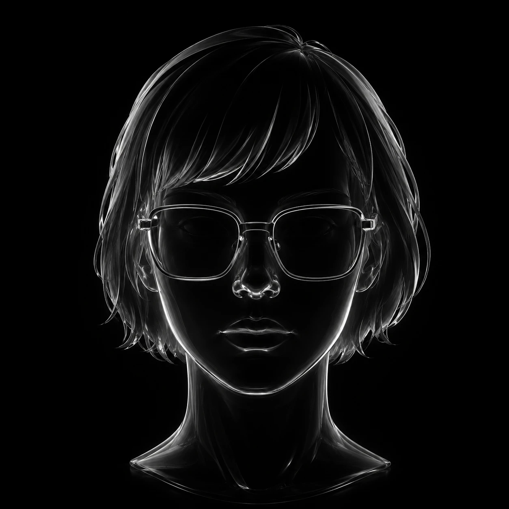

Creative Director & Multidisciplinary Lead Designer.
Proof that one creative mind, powered by AI, can be great at many crafts.
For the past 9+ years I’ve been designing with the world’s leading studios — Red Collar40+ Awards, Pinkman10+ Awards, Pearmill Inc100+ Clients, DizzaractAAA Gamedev Studio, AUDAX — creating work for brands like Autodesk, Ramp, Sber, S7, X5, Guggenheim Museum, Metro C&C, Amway and Limex.
Built the brand system for an AI × gaming ecosystem and led UX/UI for Farcana — a AAA competitive shooter: game interfaces, HUD, key art integration and marketing visuals. Grew from Lead of Game UX/UI to Head of Creative, shaping the creative team along the way.
Brand design at one of the most awarded digital studios in the world (Webby winner, 40+ international awards): identity systems and creative concepts for digital products.
Led visual design at a New York performance-marketing agency: ad creatives, key visuals and landing systems for hyper-growth startups.
Art direction and senior-level brand & web design: identities, websites and design systems for studio clients.
Product design for corporate clients — banking, retail and services: interfaces, design systems and communication design.
Editorial and media design: layouts, visual systems and key visuals for media projects.
UX/UI for digital products — first agency years, growing from junior to middle.
First years in the craft: logos, identities and web design for small businesses.